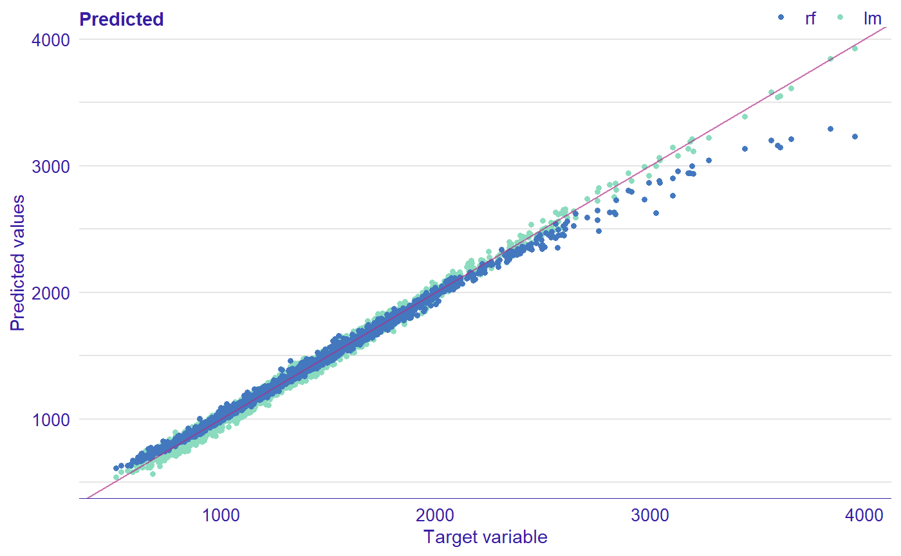
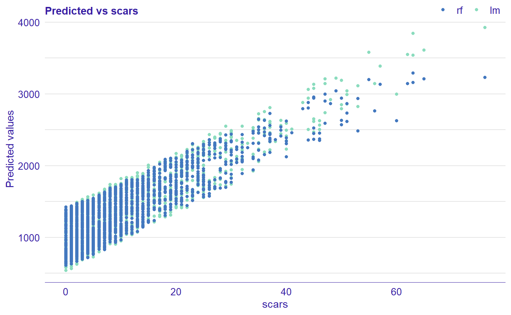
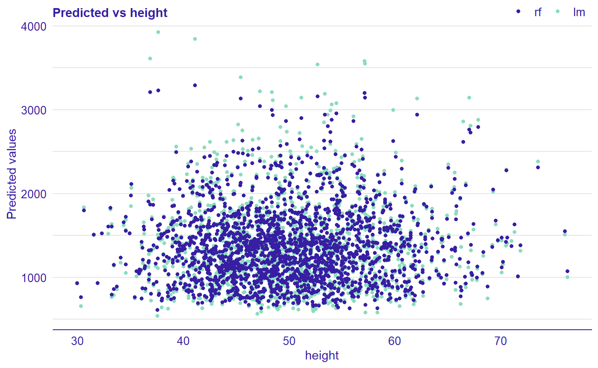
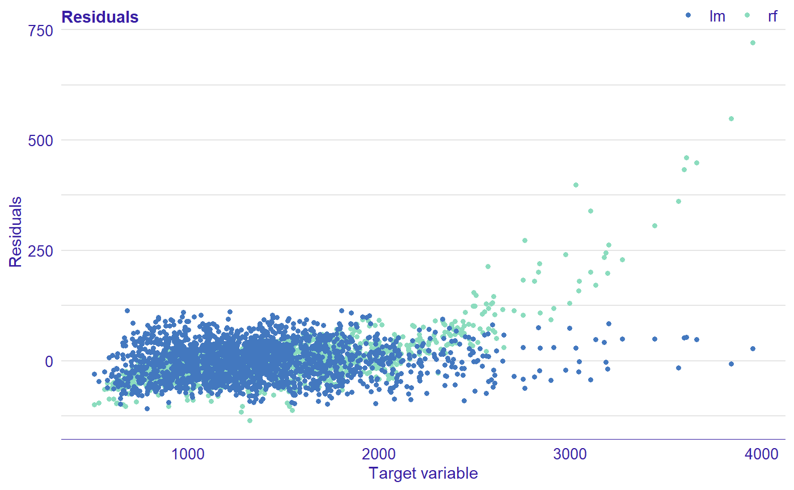
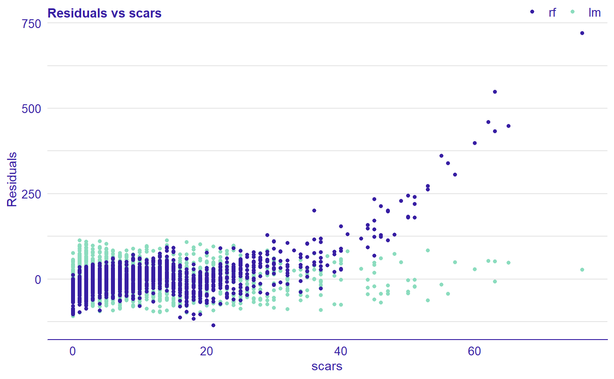
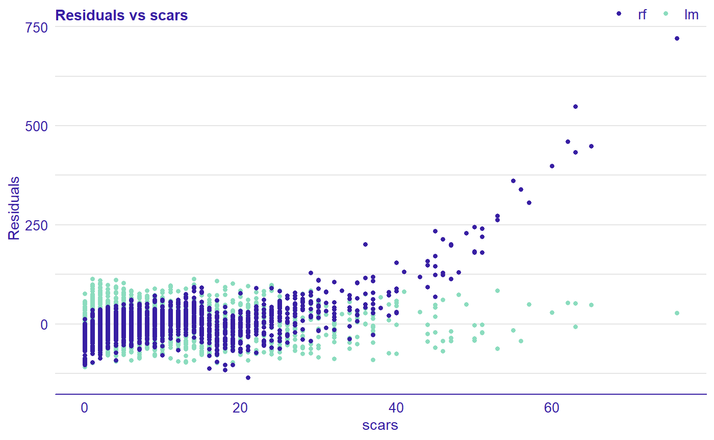

Model residuals audit
Alicja Gosiewska, Tomasz Mikołajczyk
2019-09-18
Source:vignettes/model_residuals_audit.Rmd
model_residuals_audit.RmdThis vignette demonstrates how to use the auditor package for auditing residuals of machine learning models. The residual is the difference between the observed value and the value predicted by model. The auditor provides methods for model verification and validation by error analysis. It helps in finding answers to questions that may be crucial in deeper analyses.
- Does the model fit the data? Is it not missing any information?
- Which model has better performance?
- How similar are models?
Many algorithms, such as random forests and neutral networks are sometimes treated as black boxes and there is a lack of techniques that help in the analysis of errors in those models. Most methods provided in auditor package are model-agnostic, what means that they can be used regardless of expected distribution of residuals.
Data
Use case - predicting a length of life
To illustrate application of auditor we will use dataset “dragons” available in the DALEX package. The dataset contains characteristics of fictional creatures (dragons), like year of birth, height, weight, etc (see below). The goal is to predict the length of life of dragons (a regression problem).
## year_of_birth height weight scars colour year_of_discovery
## 1 -1291 59.40365 15.32391 7 red 1700
## 2 1589 46.21374 11.80819 5 red 1700
## 3 1528 49.17233 13.34482 6 red 1700
## 4 1645 48.29177 13.27427 5 green 1700
## 5 -8 49.99679 13.08757 1 red 1700
## 6 915 45.40876 11.48717 2 red 1700
## number_of_lost_teeth life_length
## 1 25 1368.4331
## 2 28 1377.0474
## 3 38 1603.9632
## 4 33 1434.4222
## 5 18 985.4905
## 6 20 969.5682Models
First, we need models to compare. We selected linear regression and random forest because of their different structures. Linear regression model linear relationships between target response and independent variables, while random forest should be able to capture also non-linear relationships between variables.
Preparation for residual (error) analysis
Analysis begins with creation of an explainer object with explain function from DALEX package. Explainer wraps a model with its meta-data, such as dataset that was used for training or observed response.
lm_exp <- DALEX::explain(lm_model, label = "lm", data = dragons, y = dragons$life_length)
rf_exp <- DALEX::explain(rf_model, label = "rf", data = dragons, y = dragons$life_length)Next step requires creation of model_residual objects of each explainer. From this step on, only auditor functions will be used.
Plots
In the following section, we show individual plotting functions which demonstrate different aspects of residual analysis. We devote more attention to selected functions, but usage of each function is more or less similar.
Observed vs predicted
First plot is a basic plot comparising predicted versus observed values. The red line corresponds to the y = x function. The patterns for both models are non-random around the diagonal line. The points corresponding to a random forest (darker dots) show the tendency to underprediction for large values of observed response. Points for linear model (lighter dots) are located more or less around diagonal line which means that this model predicts quite well.

# alternatives:
# plot_prediction(rf_mr, lm_mr, abline = TRUE)
# plot_prediction(rf_mr, lm_mr, variable = "life_length")Function plot_prediction presents observed values on the x-axis. However, on the x-axis there may be values of any model variable or observations ordered by index (variable = NULL).
plot(rf_mr, lm_mr, variable = "scars", type = "prediction")
plot(rf_mr, lm_mr, variable = "height", type = "prediction")
As you can notice, on above plots, there is no relationship for variable height and predicted values while for increasing number of scars model predictions also increase of life length. This means that that model captured monotonic relationship between number of scars and length of life of dragon.
Residuals vs observed, fitted or variable values
Next function (plot_residual()) shows residuals versus observed values. This plot is used to detect dependence of errors, unequal error variances, and outliers. For appropriate model, residuals should not show any functional dependency. Expected mean value should be equal to 0, regardless of \(\hat{y}\) values, so any structured arrangement of points suggests a problem with the model. It is worth looking at the observations that clearly differ from the others. If points on the plot are not randomly dispersed around the horizontal axis, it may be presumed that model is not appropriate for the data.

Values (residuals) may also be ordered by target variable, fitted values, any other variable or may be presented unordered.
plot(rf_mr, lm_mr, type = "residual", variable = "_y_hat_")
plot(rf_mr, lm_mr, type = "residual", variable = "scars")
# alternative:
# plot_residual(rf_mr, lm_mr, variable = "_y_hat_")
# plot_residual(rf_mr, lm_mr, variable = "scars") 

In all examples above, we can see that linear model is better fitted for the data than random forest, because for the latter one greater values of selected variables residuals are also geater. Additionaly, we can identify most outlying observations:

Density of residuals
Residual density plot (plot_residual_density()) detects the incorrect behavior of residuals. The funcion returns plot with estimated densities of residuals. Their values are displayed as marks along the x axis. For some models, the expected shape of density could be derived from the model assumptions. For example, simple linear model residuals should be normally distributed. However, even if the model does not have an assumption about the distribution of residuals residual density plot may be informative. If most of the residuals are not concentrated around zero, it is likely that the model predictions are biased.

Residuals may be also divided by values of a choosen variable (median of a numeric variable or levels of a factor).

Boxplot of residuals
Residual boxplot (plotResidualBoxplot()) shows the distribution of the absolute values of residuals. Boxplot usually presents following values:
- box width which corresponds to the second and third quartile,
- vertical line which reflects median,
- the whiskers which extend to the smallest and largest values, no further than 1.5 of interquartile.
auditor adds another component to the boxplot which is the root mean square error (RMSE) measure, shown as X. For the appropriate model, box should lay near zero. A large spread of values indicates problems with a model. Comparing our two models we can see that random forest model is much more spreaded (worse) than linear one.

Autocorrelation function of residuals
Function plot_acf() creates plot which is helpful in checking randomness of errors. If errors are random, autocorrelations should be near zero for lag separations. If they are non random, then autocorrelations will be significantly higher than zero. The vertical dashed lines indicate boundaries, where autocorrelations are significantly different than zero.

Autocorrelation of residuals
Autocorrelation plot (plot_autocorrelation()) shows correlation of i-th vs i+1-th residuals. This plot may be useful for checking autocorrelation of residuals.

….. ….. ….. …. ….. Sometimes it migth be difficult to compare two models relying only on visualization. Therefore, two following additional scores may be useful for choosing a better model; scores are based on Durbin-Watson and Runs test statistics. Scores can be calculated with score_dw() and score_runs() functions (or the score() function with score = "dw" or score = "runs"). ….. ….. ….. …. …..
## [1] 1.951918## [1] -1.881788Correlation of models
Function plot_correlation() returns grid of plots with correlation of dependent variable and fitted values of model(s). In the diagonal, there are estimated densities; in the upper triangle two kind of correlations: (1) between models and (2) between predicted and observed values. In the lower triangle, there are scatter plots of these values.

Principal component analysis (PCA) of models
Function plot_pca() can be used to assess the similarity of the models in terms of residuals. The idea of PCA is reducing the dimension of the data set matrix by creating a set of linearly uncorrelated variables called principal components. At the same time, keeping as much variance as possible. Model PCA plot is a biplot. On axis of the plot, there are first two principal components. Grey dots represent observations. Arrows are pointing in the direction of the models projected into a two-dimensional space. The interposition of arrows provides information about the similarity of models in terms of residuals. If they are close to each other, it indicates similar residuals structures.

Regression error characteristic curve (REC)
Error characteristic curves are a generalization of ROC curves. On the x-axis of the plot there is an error tolerance and on the y axis there is a percentage of observations predicted within the given tolerance. REC curve estimates the cumulative distribution function (CDF) of the error. Area over the REC curve is a biased estimate of the expected error.

Regression receiver operating characteristic (RROC)
The basic idea of the ROC curve for regression is to show model asymmetry. The RROC is a plot where on x-axis total over-estimation is depicted and on the y-axis total under-estimation.
For RROC curves we use a shift which is an equvalent to the threshold for ROC curves. For each observation we calculate new prediction: where s is the shift. Therefore, there are different error values for each shift:
………………. - over-estimation is caluclates as: - under-estimation is calculated as: - the shift equals 0 is represented by a dot ……………….
The area over the RROC curve (AOC) equals to the variance of the errors multiplied by .

Scale location
This plot shows if residuals are spread equally along the ranges of predictors. The presence of any trend suggests that the variance depends on fitted values, which is against the assumption of homoscedasticity. Not every model has an explicit assumption of homogeneous variance, however, the heteroscedasticity may indicates potential problems with the goodness-of-fit.

Two-sided empirical cumulative distribution function (TSECDF)
Cumulative distribution function for positive and negative residuals. The plot shows the distribution of residuals divided into groups with positive and negative values. It helps to identify the asymmetry of the residuals. Points represent residuals.